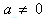
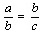
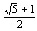
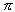
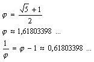
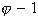

Z³oty podzia³, podzia³ harmoniczny, dla liczby a, , jest to przedstawienie tej liczby w postaci sumy b + c dwu sk³adników b, c takich, ¿e . Dla odcinka jest to podzia³ wewnêtrzny tego odcinka w stosunku . W wyniku z³otego podzia³u odcinka otrzymuje siê dwa odcinki o tej w³asno¶ci, ¿e stosunek d³ugo¶ci d³u¿szego z nich do d³ugo¶ci krótszego jest równy stosunkowi d³ugo¶ci dzielonego odcinka do d³ugo¶ci d³u¿szego odcinka. Na przyk³ad punkt przeciêcia przek±tnych piêciok±ta foremnego wyznacza ich z³oty podzia³. Równie¿ bok dziesiêciok±ta foremnego ma d³ugo¶æ równ± d³ugo¶ci d³u¿szego z odcinków wyznaczonych przez z³oty podzia³ promienia okrêgu opisanego na tym dziesiêciok±cie. W staro¿ytno¶ci przypisywano z³otemu podzia³owi odcinka wyj±tkowe walory estetyczne i u¿ywano go jako miary proporcji w architekturze.
LICZBA FI
Obok powszechnie znanej liczby  (pi) istnieje mniej znana liczba (fi), która wyra¿a stosunek dwóch czê¶ci odcinka podzielonego podzia³em z³otym. Ile wynosi liczba ?

Liczb± , nazywamy jedyn± liczbê rzeczywist±, tak±, ¿e jej odwrotno¶æ jest równa ró¿nicy .
Staro¿ytni Grecy uwa¿ali z³oty podzia³ za idealn± proporcjê, któr± chêtnie realizowali w architekturze. Obecnie z³oty podzia³ jest te¿ czêsto stosowany, np. wymiary znormalizowanego zeszytu pozostaj± w stosunku w przybli¿eniu równym stosunkowi z³otego podzia³u.